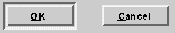

Button
A button (vbutton) is a control subclass that can be triggered by user interaction with the keyboard or mouse. The button class provides methods to create and manipulate buttons, as well as detect when a button has been triggered.
Figure 1. Typical Buttons

A button can be triggered in three ways. First, the user might "click" on the button using the mouse. The button is not triggered, however, until the mouse button is released, and then only if the mouse pointer is still located in the button rectangle. Second, the user can place the focus of the dialog on the button, and press the return key. And, lastly, if a mnemonic has been assigned to the button, the button can be triggered from the keyboard by pressing the appropriate keys.
In all three cases, an event is generated which can be programmatically examined and cause a routine to be executed. A button event can be handled in one of two ways. One way is to assign a notification function to every button in the dialog. The drawback to this method is the amount of code that must be produced for every button.
A more common way to detect that a button has been triggered is to assign a tag to the button using VRB (a tag is a unique identifier, or name (vname), for a dialog item). Then, using the Command classes, assign a group of commands to the dialog space or application. When the button is triggered by the end-user, the Command classes will route the event to a method that handles the event. In this manner, a collection of buttons can be handled in a central location. Commands also allow you to perform many other functions. For more information on commands, refer to the Command chapter. For more information on tags, refer to the Resource and Name chapters.
Since buttons are really only functional within a dialog, an understanding of the Dialog class is often useful.
It may also be useful to refer to the Resource class for information on tags and their relationship to Galaxy objects.
You can determine if a button is currently highlighted by using the IsHilited method. It returns true if the button is currently highlighted, false otherwise.
Relationship to Other Classes
The button class is a subclass of the Control class. In fact, the button class does not add many methods to the base control class, instead relying on the capabilities of Control to manipulate most of the button's attributes. See the Control chapter for more information. Key Functionality
All of the attributes of a button are handled by the Control class. The most interesting attributes, however, are a button's title and image. Use the SetTitle method to set the text that the button shows. Use SetImage instead of SetTitle to have a button display an image instead of a words. Triggering a Button
In addition to the three ways a user can trigger a button, you can also programmatically trigger a button using the Blink method. This causes the button to quickly highlight and then unhighlight, as if it had been triggered by the user. It also causes the same events and notifications to be sent as if the end user had pressed the button.
Table of Contents
Help Map
Need help? Contact Visix.